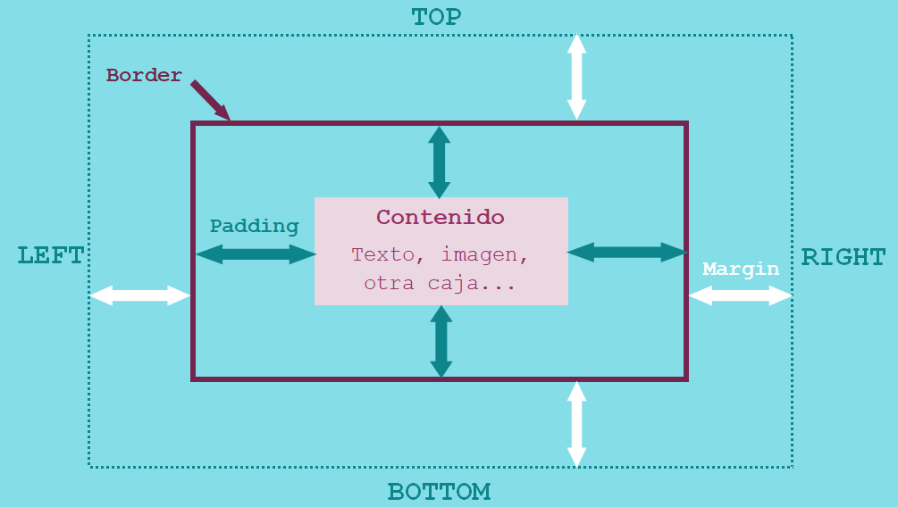

Modelo de caja
El modelo define cómo funcionan juntas las diferentes partes de una caja (margen, borde, relleno y contenido) para crear una caja que puedas ver en tu página.
Partes de una caja
- Contenido de la caja (o content box)
- El área donde se muestra el contenido, cuyo tamaño puede cambiarse utilizando propiedades como width y height.
- Relleno de la caja (o padding box)
- El relleno es espacio en blanco alrededor del contenido; es posible controlar su tamaño usando la propiedad padding y otras propiedades relacionadas.
- Borde de la caja (o border box)
- El borde de la caja envuelve el contenido y el relleno. Es posible controlar su tamaño y estilo utilizando la propiedad border y otras propiedades relacionadas.
- Margen de la caja (o margin box)
- El margen es la capa más externa. Envuelve el contenido, el relleno y el borde como espacio en blanco entre la caja y otros elementos. Es posible controlar su tamaño usando la propiedad margin y otras propiedades relacionadas.
Propiedades de las partes de una caja
margin y padding
Podemos establecer el tamaño del margen y del relleno de forma similar a través de CSS. La única diferencia es que margin admite valores negativos y padding no.
Se puede indicar su tamaño para las cuatro partes del elemento de forma individual (en sentido de las agujas del reloj):
- margin-top / padding-top
- margin-right / padding-right
- margin-bottom / padding-bottom
- margin-left / padding-left
Pero también podemos indicarlo de forma simplificada:
- top right bottom left → elem {margin: 2em 1em 1.5em 2.5em}
- top&bottom right&left → elem {margin: 2em 1em}
- top right&left bottom → elem {margin 2em 1em 2.5em}
border
Hay diferentes propiedades que se pueden definir para un borde, entre ellas están: el estilo, el ancho y el color. De igual manera que en el caso del margen y relleno, podemos establecer las propiedades de tres formas diferentes:
- De forma conjunta a todos los bordes → border[-xxxx] h1{border-width: 10px;}
- De forma individual para cada borde y propiedad → border-top-xxxx, border-right-xxxx, border-bottom-xxxx, border-left-xxxx h2{border-top-color: blue;}
- De forma simplificada para cada borde y varias propiedades & rarr; border-top, border-right, border-bottom, border-left h3{border-right: thick solid red;}
border-width
- valor
- thin
- medium
- thick
border-style
| none | dotted | dashed | solid | double | groove | ridge | inset | outset | hidden |
border-color
Se indica como cualquier propiedad de color de otros elementos (ver color).
Fondo de objeto
Podemos definir las diferentes propiedades del fondo de un elemento con background.
- background-color → Permite definir un color para el fondo.
- background-image → Permite poner una imagen referida con una URL en el fondo del elemento.
- background-repeat → Controla la forma en que se repiten las imágenes de fondo.
- repeat-x
- repeat-y
- no-repeat
- none
- background-attachment → Indica la forma en la que se visualiza la imagen de fondo: permanece fija
cuando se hace scroll en la ventana del navegador o se desplaza junto con la ventana:
- scroll
- fixed
- background-position → Define la posición en la que se muestra la imagen en el fondo del elemento.
- porcentaje
- medida
- clave → top (0%), left(0%), center(50%), bottom (100%), right(100%)
- horizontal vertical → 20% 50%
- clave [clave] → top right
- horizontal → 50%
Posibilidades para indicar la posición del fondo: